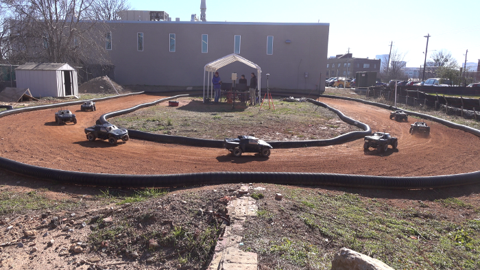
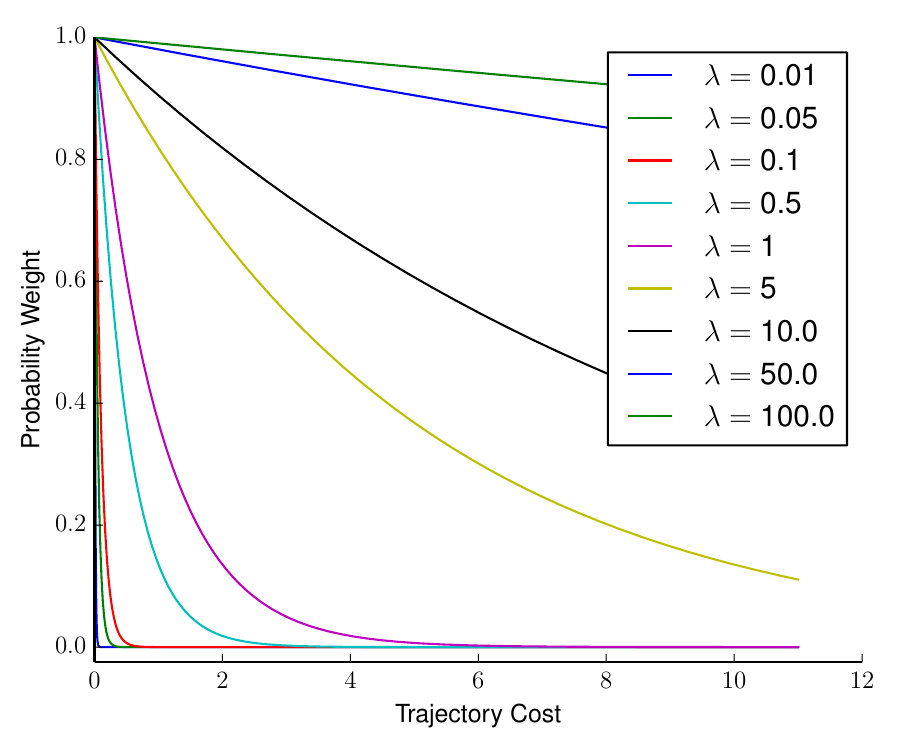
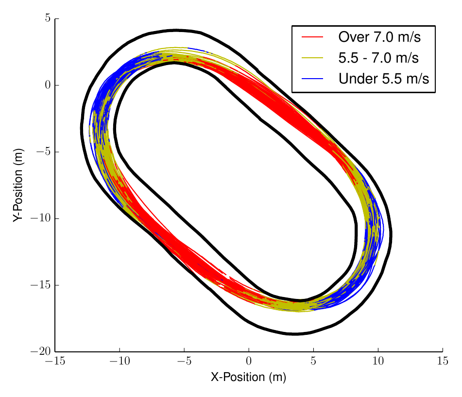
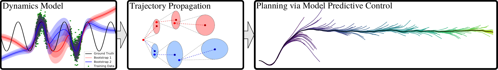
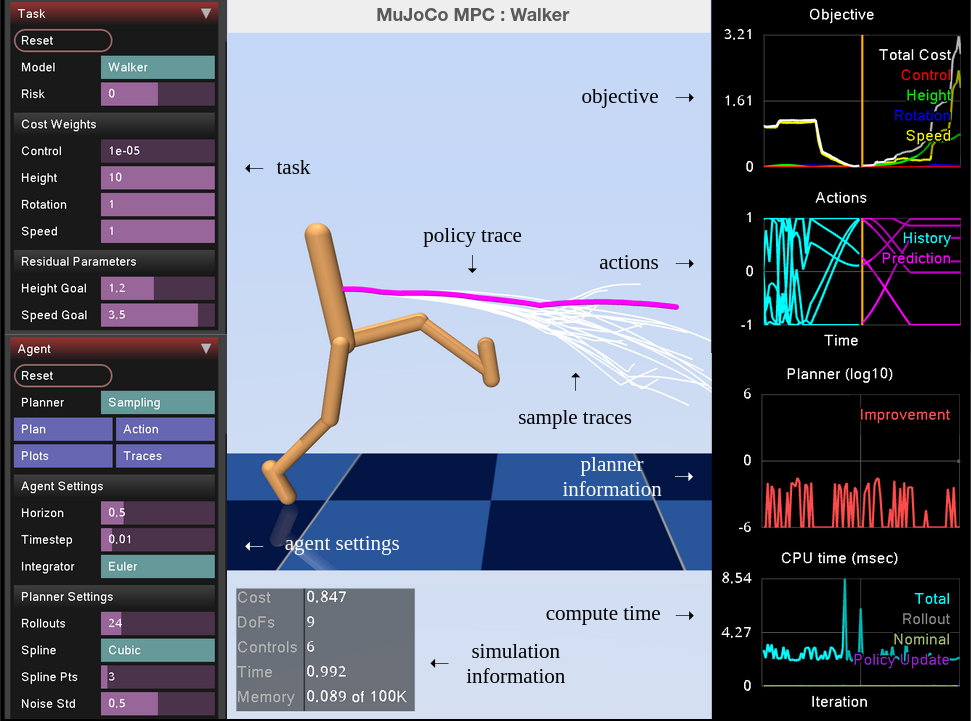
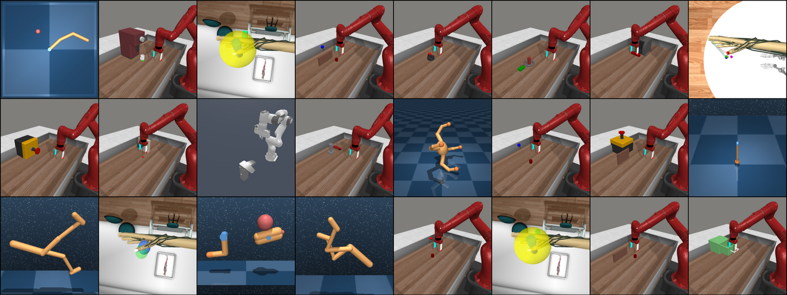

An interactive explainer
Model Predictive Control: planning by replanning — from LQR to CEM and MPPI
A 22 kg model car drifts around a dirt track at the edge of tire friction, steered by nothing but a GPU simulating 1,200 possible futures every 25 milliseconds. A chemical plant has been running the same trick since 1979. The trick is model predictive control: don't learn a policy, don't solve the problem once — plan a short distance ahead, act on the first step, throw the plan away, and plan again. This is the story of that loop, and of the three families of optimizers that can live inside it: the exact one (LQR), the gradient one (iLQR), and the sampling ones — CEM and MPPI — that took over robotics precisely because they don't need gradients.

Ask a roboticist in 2026 how their robot decides what to do next and, remarkably often, the answer is the same loop: simulate a bunch of short futures, score them, act on the best beginning, repeat. The quadruped recovering from a shove, the drone threading a forest, the manipulation policy fine-tuning a grasp, the RL agent that learned a world model from pixels — under the hood, a planner is being re-run dozens of times per second.
That loop has a name — model predictive control (MPC) — and a curious history. It was not invented by roboticists or machine learners. It came out of oil refineries in the late 1970s, where engineers at Shell wanted controllers that could respect hard limits on valves and temperatures, something the elegant textbook theory couldn't do. Their solution was almost embarrassingly pragmatic: put the plant's model in a computer, optimize the next few minutes of inputs, apply the first one, and re-optimize a minute later. Theory spent the next two decades catching up to why that works so well.
There is one conceptual confusion worth clearing at the door, because it trips up almost everyone coming from machine learning. You will hear MPC described as "a gradient-free optimizer," or contrasted with gradient descent. MPC is not an optimization algorithm at all. It is a strategy — a loop that repeatedly poses a short optimization problem and executes only the first step of each answer. What solves that inner problem is a separate, swappable choice: an exact matrix recursion (LQR), a gradient method (iLQR), or a sampling method (CEM, MPPI). This post builds all four, in that order, with the loop itself in the middle — because the loop is the part that survives every substitution.
1. One problem, three solver families
Everything in this post is an answer to a single question. You have a state $\vx_t$ — the robot's joint angles and velocities, the car's pose and speed, the reactor's temperatures. You have actions $\vu_t$ — motor torques, steering and throttle, valve openings. And you have a model: a function $f$ that predicts the next state from the current one, $\vx_{t+1} = f(\vx_t, \vu_t)$. The model might be Newton's laws, a fluid simulator, or a neural network trained on experience — for now it's just a black box you can roll forward. The question: which sequence of actions should I take? Formally, over a horizon of $H$ steps:
$$ \min_{\vu_0, \dots, \vu_{H-1}} \;\; \sum_{t=0}^{H-1} c(\vx_t, \vu_t) \;+\; c_H(\vx_H) \qquad \text{s.t.} \quad \vx_{t+1} = f(\vx_t, \vu_t), $$
where $c$ is a running cost (distance from the goal, energy spent, "am I inside the obstacle") and $c_H$ is a terminal cost on where you end up. This is the finite-horizon optimal control problem, and it is the constant of this post: every algorithm below is a different way of attacking this same minimization. Notice what kind of object the answer is: a concrete sequence of $H$ actions — an open-loop plan — not a policy $\pi(\vx)$ that maps any state to an action. Keep that distinction in mind; it becomes the central tension of section 3.
The solvers split into three families by what they ask of $f$ and $c$:
- Analytic. If the dynamics are linear and the cost is quadratic, the problem has a closed-form solution — no iteration, no search. This is LQR, and it is the only case this clean.
- Gradient-based. If $f$ and $c$ are smooth, differentiate through the rollout and improve the plan iteratively: iLQR/DDP, SQP, interior-point methods. Fast, precise — and dependent on derivatives existing and being informative.
- Sampling-based. Treat the whole rollout as a black box: throw candidate action sequences at the model, score the results, and use the scores to propose better candidates. CEM and MPPI. All they need is a fast forward simulator.
Three families, one problem. We start with the exact one, because its two matrices — $Q$ and $R$ — teach the cost-shaping intuition that every method downstream inherits.
2. LQR: the one case with an exact answer
In 1960, Rudolf Kalman showed that one special case of the problem above collapses into linear algebra. Let the dynamics be linear, $\vx_{t+1} = A\vx_t + B\vu_t$, and the cost be quadratic,
$$ J \;=\; \sum_{t} \; \vx_t^\top Q\, \vx_t \;+\; \vu_t^\top R\, \vu_t, $$
with $Q$ penalizing state error and $R$ penalizing control effort. This is the linear-quadratic regulator. Solve it by dynamic programming from the end of the horizon backwards: the cost-to-go stays quadratic, $V_t(\vx) = \vx^\top P_t\, \vx$, with $P_t$ given by the Riccati recursion
$$ P_t \;=\; Q + A^\top P_{t+1} A \;-\; A^\top P_{t+1} B \left(R + B^\top P_{t+1} B\right)^{-1} B^\top P_{t+1} A, $$
and the optimal action turns out to be a linear feedback law: $\vu_t = -K_t \vx_t$ with $K_t = (R + B^\top P_{t+1} B)^{-1} B^\top P_{t+1} A$. Pause on how strong this is. You don't get a plan — you get a policy, a gain matrix valid from any state. Disturb the system, and the same $K$ pushes it back. No replanning needed, because the solution already covers every contingency. This is why LQR (and its continuous-time sibling) sits inside flight controllers, hard-drive heads, and segways: it is feedback in its purest, cheapest form.
The knobs $Q$ and $R$ are the designer's entire vocabulary, and their ratio is what matters: big $Q$ says "get to the target fast, spend whatever actuation it takes"; big $R$ says "be gentle, take your time." Feel the trade-off yourself:
So if LQR hands us a perfect feedback policy, why isn't control theory finished? Because both of its adjectives are lies about the real world. Dynamics are not linear — a robot arm's inertia changes with configuration, tires saturate, contact makes and breaks. And quadratic cost cannot say the two things engineers most need to say: "never exceed this" and "stay out of there." A quadratic penalty on valve opening discourages large openings; it cannot forbid 105%. Fixing those two lies, in two different ways, generates everything else in this post.
3. The receding horizon: feedback without a policy
Suppose the model or cost is too awkward for an exact policy, so you fall back to computing an open-loop plan $\vu_0, \dots, \vu_{H-1}$ and executing it. This fails in a characteristic way: the plan is a bet on the model, and reality drifts from the model a little more at every step. Wind gusts, wheel slip, a neural dynamics model that is 2% wrong per step — by step thirty, your carefully optimized action sequence is being applied to a state it was never meant for. Open-loop plans die on contact with reality.
MPC's fix is blunt and brilliant: never trust a plan for more than one step.
loop at every control tick:
x ← measure current state
U* ← argmin over u_0..u_{H-1} of Σ cost, subject to x_{t+1} = f(x_t, u_t) # any solver
apply u_0* only
(warm start: shift U* one step, reuse it as next tick's initial guess)The horizon recedes: you always look $H$ steps ahead from wherever you actually are, like headlights that move with the car. Each replan folds the newest measurement back into the decision — so although every individual plan is open-loop, the loop as a whole is a feedback controller. That is the conceptual heart of MPC, and the answer to where its robustness comes from: not from any one plan being right, but from no plan being trusted long enough to be badly wrong.
Two forces pull on the horizon length $H$. Too short and the controller is myopic — it can't see that the cheap action now leads into a corner it can't escape. Too long wastes compute on a future the replanning loop will revise anyway, and (with a learned model) accumulates model error over the rollout. Practical systems use surprisingly short horizons — half a second to a few seconds — plus a terminal cost $c_H$ that stands in for everything beyond. Play with both failure modes:
4. Constraints: why industry pays for MPC
Here is the part the robotics-first telling usually skips: MPC conquered the process industries decades before it touched a robot, and it did so for one reason — constraints. The 1979 Dynamic Matrix Control paper by Cutler and Ramaker (Shell) and its successors ran distillation columns and crackers with dozens of coupled inputs, where the profitable operating point sits right against the equipment limits: valves at their stops, temperatures at their maxima. LQR's quadratic vocabulary cannot express "at most," so it must operate wastefully far from the limits. MPC states the limit and rides it.
Structurally, if the model is linear and the cost quadratic, adding linear inequalities $\vu_{\min} \le \vu_t \le \vu_{\max}$, $G\vx_t \le h$ turns the inner problem into a quadratic program (QP) — convex, reliably solvable in milliseconds by active-set or interior-point methods. That package — linear model, quadratic cost, hard constraints, solved as a QP every tick — is linear MPC, and it is arguably the most-deployed advanced control technique on Earth: refineries and chemical plants by the thousands since the 1980s, and more recently convex-MPC locomotion controllers on quadrupeds (MIT Cheetah 3 and its many descendants) and the onboard convex solvers that guide rockets through powered descent — the "how did it land on the barge" algorithm is a cousin of this loop.
It's worth saying explicitly, because it answers "why not just LQR everywhere": inside the constraint-free interior, linear MPC with a long horizon behaves like LQR. What you're buying with the QP is exactly the boundary behavior — planning that anticipates the saturation before hitting it, instead of discovering it by clipping. And note the direction of the solver taxonomy here: this workhorse MPC is thoroughly gradient-based — a QP solver is Newton's method with bookkeeping. Anyone who tells you MPC means sampling has only seen the robotics half of the story.
5. iLQR: gradients for nonlinear worlds
Now un-lie the other adjective: real dynamics are nonlinear. The gradient family's move is the oldest in numerical optimization — if the problem isn't linear-quadratic, pretend it is, locally, and iterate. The iterative LQR algorithm (iLQR; Li & Todorov 2004, tightening Mayne's 1966 differential dynamic programming) runs a loop of three steps:
given a nominal trajectory (x̄, ū):
1. roll out f, linearize: δx_{t+1} ≈ A_t δx_t + B_t δu_t (Jacobians of f)
quadratize the cost around (x̄, ū)
2. backward pass: solve the resulting LQR exactly (Riccati) →
feedforward correction k_t + feedback gains K_t
3. forward pass: apply u_t = ū_t + α k_t + K_t (x_t − x̄_t), get a better trajectory
repeat until convergedEach iteration is one exact LQR solve on the local approximation — so everything section 2 built gets reused as the inner engine of a nonlinear method. iLQR converges in a handful of iterations near a good solution, scales to high-dimensional states, and even hands you local feedback gains $K_t$ for free between replans. Wrapped in a receding-horizon loop, iLQR-MPC has flown aggressive quadrotor maneuvers, driven full-size cars, and controlled humanoids. When your model is smooth and you have its Jacobians, it is very hard to beat: a thousand-fold fewer model evaluations than any sampling method for the same solution quality.
The catch is in the premise: when your model is smooth. Every step of the derivation leans on Jacobians of $f$ that exist and mean something. Time to break that.
6. Where gradients break
Three things quietly went wrong with the gradient program as robotics moved to legs, hands, and learned models.
Contact. A foot strikes the ground; a finger closes on a mug. The dynamics on either side of the impact are different functions, glued discontinuously. Near the seam, Jacobians either don't exist or are wildly misleading — a micrometer perturbation flips "touching" to "not touching" and the gradient sees a cliff or nothing at all. Contact-rich control is a minefield of exactly the events that matter most.
Discontinuous costs. The costs engineers actually want are indicator-shaped: crashed or not, on the track or off it. The AutoRally cost we'll meet in section 8 contains a literal indicator function — a huge impulse penalty for leaving the track — whose gradient is zero everywhere it's defined and useless where it isn't. The gradient program says "smooth that penalty," and every smoothing is a small lie about where the boundary is; sampling methods get to keep the true cost.
Learned and simulated models. When $f$ is a physics engine stepping collisions, its derivatives range from unavailable to treacherous. When $f$ is a neural network, gradients exist but a network fit to data is bumpy at fine scales — and an optimizer following those gradients will happily exploit the model's errors, planning trajectories that are optimal in the network's hallucinated physics and nonsense in reality.
The zeroth-order response: stop differentiating; only evaluate. Roll out candidate action sequences, look at their total costs, and let the scores — not the slopes — guide the search. What sampling loses per-evaluation it wins back in robustness (a rollout through a discontinuity is still a perfectly valid rollout) and in parallelism: a GPU evaluates a thousand rollouts in the time it evaluates one chain of Jacobians. Watch the two philosophies race:
7. CEM: survival of the elites
The cross-entropy method is the plainest useful answer to "how should scores guide the search?" It began life far from robots — Rubinstein, 1997, estimating vanishingly rare events in queueing systems — and its optimization form is four lines. Maintain a Gaussian over entire action sequences $U = (\vu_0, \dots, \vu_{H-1})$, viewed as one flat vector; then repeat:
μ, σ ← initial guess (e.g., last tick's shifted plan)
repeat n_iters times:
sample K sequences U_k ~ N(μ, diag(σ²))
roll out each through f, compute total cost S_k
elites ← the M lowest-cost samples # M/K ≈ 10%
μ ← mean(elites), σ ← std(elites) # refit to the winners
return μSample, select, refit. The Gaussian starts wide — spraying the whole space of maneuvers — and each refit contracts it around the region that scored well, an annealing schedule the method sets for itself. The name comes from the theory: refitting to elites minimizes the cross-entropy between the sampling distribution and an idealized distribution over low-cost outcomes. In practice its charm is that there is nothing to tune but population size and elite fraction, and nothing it demands of $f$ and $c$ but evaluability. Cliffs, indicators, contact seams, neural networks: all just rollouts.
CEM's weaknesses are the mirror of its simplicity. The hard elite cutoff throws away the information in every non-elite sample — a rollout just below the cutoff line contributes exactly as much as a catastrophic one, namely nothing. Iterating sample→refit several times per control tick multiplies the rollout budget. And a variance that shrinks too fast becomes overconfident and locks onto the wrong mode (you just watched it happen in the widget, if you pushed the sliders). Still, plugged into the receding-horizon loop as the inner solver, CEM became the default planner of the model-based RL renaissance — PETS and PlaNet both plan with it — because when your dynamics model is a neural network you'd rather not trust the gradients of, "just evaluate it" is exactly the right relationship to have with your model.
8. MPPI: every sample gets a vote
Model predictive path integral control — Williams, Aldrich, and Theodorou at Georgia Tech, mid-2010s — is CEM's sophisticated sibling, and the fix for the hard cutoff. Instead of anointing elites and averaging them equally, MPPI lets every rollout vote, with a weight that decays exponentially in its cost. Perturb the current plan $U$ with noise sequences $\veps_k$, roll out, then:
$$ w_k \;=\; \frac{\exp\!\left(-S_k/\lambda\right)}{\sum_{j=1}^{K} \exp\!\left(-S_j/\lambda\right)}, \qquad\quad U \;\leftarrow\; U + \sum_{k=1}^{K} w_k\, \veps_k . $$
A softmax over trajectory costs. The temperature $\lambda$ interpolates between the two dumbest algorithms you could imagine: as $\lambda \to 0$ the weights collapse onto the single best rollout (greedy argmax — brittle), and as $\lambda \to \infty$ every rollout counts equally (the update averages pure noise and goes nowhere). In between, the update is a smooth, information-weighted consensus of everything the sampler learned this tick. Where CEM needs several shrinking iterations, MPPI typically takes one weighted step per control tick and lets the receding-horizon loop do the iterating — the warm-started plan is refined 40 times a second anyway, so each tick only needs to improve it, not solve it.


The theory behind the softmax is genuinely pretty: for stochastic systems, the optimal distribution over trajectories can be written in closed form as $q^*(\tau) \propto p(\tau)\, e^{-S(\tau)/\lambda}$ — reweight what the noisy system does for free by the exponentiated cost — and the MPPI update is importance sampling toward that target. This "free-energy / path-integral" view is where the name comes from, and it's also a bridge to modern ML: the same exponential-reweighting template appears in soft-RL (the soft Bellman backup), in reward-weighted regression, and in the way test-time search sharpens toward low-energy solutions. But you don't need the derivation to use the method, and most users never touch it.
What made MPPI famous is where it ran. The AutoRally results are worth spelling out: a 1/5-scale, 22 kg car, top speed 113 km/h, with everything onboard — and the controller samples 1,200 rollouts of 2.5 seconds, 40 times per second, about 4.8 million queries to the full nonlinear dynamics every second, on a GTX 750 Ti (a $150 graphics card). The cost function contains a literal indicator penalty for leaving the track — the discontinuity gradients can't touch — and the dynamics model in the strongest runs is a neural network fit to driving data. Sampling breadth substitutes for derivative information, and the GPU makes breadth cheap.
CEM or MPPI, then? They are two rules for the same "perturb → rollout → combine" tick, and the honest comparison (Williams et al. ran it on the same car) usually favors MPPI's soft weighting for control:
| CEM | MPPI | |
|---|---|---|
| selection | hard top-$M$ elite cutoff | soft exponential weight on all $K$ |
| information used | rank only (in/out of elite set) | full cost values |
| iterations per tick | several (sample → refit → resample) | typically one weighted update |
| variance | adapts automatically (refit σ) | fixed by hyperparameter |
| tuning | population + elite fraction, robust | λ and noise σ need care |
| natural home | offline / low-rate planning, model-based RL | high-rate receding-horizon control |
9. The modern synthesis: sampling MPC meets learned models
The reason this fifty-year-old toolbox is having a second youth is that sampling MPC and learned dynamics models are almost suspiciously compatible. A neural network model wants an optimizer that (a) never asks for trustworthy derivatives, (b) evaluates in large batches — precisely how GPUs like to run networks — and (c) is re-run constantly, so no single hallucinated plan is ever trusted for long. That is a description of CEM and MPPI. The receding-horizon loop even doubles as an error-correction mechanism for the model itself: replanning from the measured state discards the model's accumulated drift every tick.

PETS made the case quantitatively: with an uncertainty-aware ensemble model and CEM planning, it matched the asymptotic performance of model-free RL on standard benchmarks using 8× fewer samples than SAC and 125× fewer than PPO on half-cheetah. PlaNet moved the same recipe into a latent state learned from pixels — CEM planning in the latent space of a world model. TD-MPC2 is the current form of the idea: an MPPI-style planner in latent space, with a learned value function as the terminal cost $c_H$ — RL amortizing the far future so the planner only needs a short horizon — and one set of hyperparameters controlling 80 tasks. And DeepMind's MJPC showed how low the floor is: its "predictive sampling" baseline — sample around the current plan, keep the single best rollout, repeat — is CEM with an elite set of one, and it interactively controls humanoids and dexterous hands on a laptop CPU.


It is worth placing this loop against its great rival: the amortized policy. A policy network $\pi_\theta(\vx)$ does its optimization at training time, over parameters, and answers at test time in one forward pass — fast, but frozen. MPC optimizes at decision time, over actions, and can respond to a new obstacle, a changed cost, a damaged actuator this tick — at the price of onboard compute. The field's answer is increasingly "both": a policy proposes, a sampling planner refines (TD-MPC2's policy seeds its MPPI samples), value functions truncate horizons, and test-time-search systems like the energy-based policies covered elsewhere on this site blur the line entirely — inference-as-optimization is MPC's core move wearing a new name.
The cheat sheet
Given a control problem, the decision tree the field actually uses:
| your problem | reach for | why |
|---|---|---|
| linear dynamics, quadratic cost, no constraints | LQR | exact policy from a Riccati solve; nothing else comes close |
| linear-ish, hard input/state limits | linear MPC (QP) | constraints as first-class citizens; the industrial workhorse |
| smooth nonlinear, good model, need precision | iLQR / DDP in MPC | gradient efficiency: converges in few rollouts, gains for free |
| contact, discontinuous cost, learned model | MPPI (or CEM) in MPC | derivative-free, embarrassingly parallel, keeps the true cost |
| offline planning / model-based RL inner loop | CEM | self-annealing, nearly tuning-free, robust |
| millisecond reflexes, no onboard compute | amortized policy (+ optional MPC refinement) | optimization moved to training time |
The bottom line
Strip away fifty years of notation and the story is one loop and three engines. The loop — plan a short horizon, act on the first step, replan from what actually happened — converts any trajectory optimizer into a feedback controller, which is why it has outlived every particular choice of optimizer inside it. The engines trade model knowledge for evaluations: Riccati when the world is linear-quadratic, Jacobians when it is smooth, and raw parallel simulation when it is neither. CEM and MPPI are not exotic — they are the two simplest rules for turning a batch of scored guesses into a better guess, elite averaging and softmax voting, made viable by the same hardware trend that built deep learning. So: is MPC a gradient-free optimization algorithm? No — MPC is the loop. Gradient-free is one of three things you can put inside it, and knowing which engine fits which world is most of what "doing control" means now.